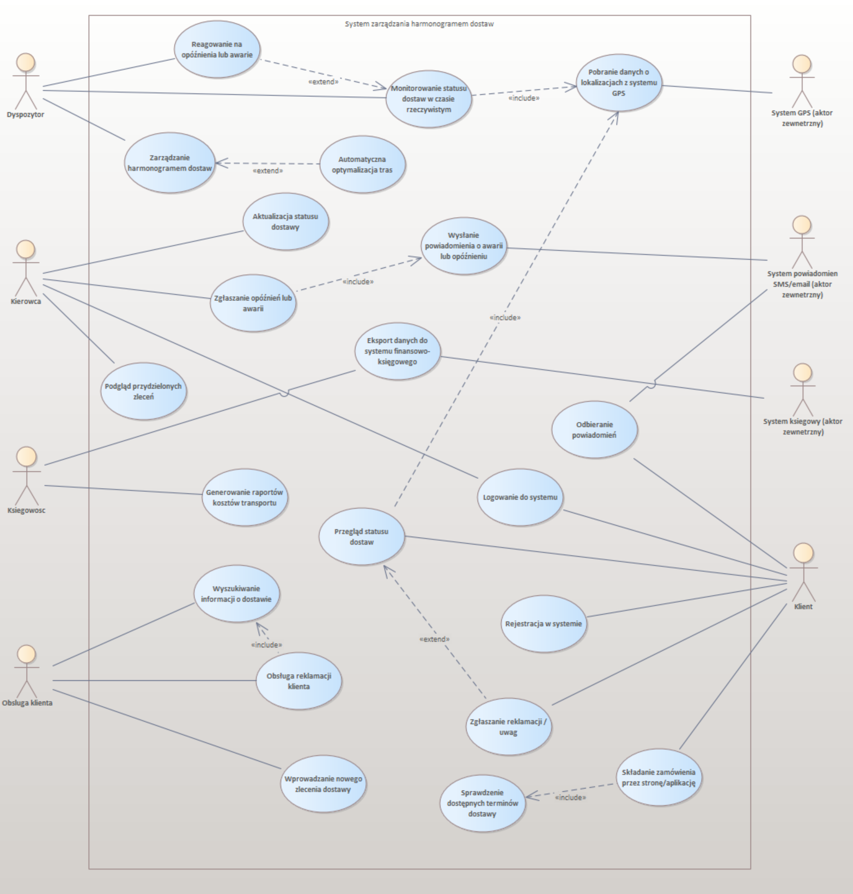

Projektowanie Systemu Zarządzania Harmonogramem Dostaw
O projekcie
Projekt realizowany w ramach przedmiotu Inżynieria Oprogramowania. Nie polega na implementacji systemu, a na pełnym procesie jego projektowania – od wizji i analizy wymagań, przez przypadki użycia i model obiektowy, po diagramy dynamiczne. Wszystkie diagramy zostały stworzone w programie Enterprise Architect.
Projektowany system ma usprawnić zarządzanie harmonogramem dostaw fikcyjnej firmy logistycznej Phoenix Sp. z o.o. Firma działa na terenie województwa Pomorskiego, obsługuje ~80 klientów miesięcznie, posiada 20 pojazdów i zatrudnia 15 kierowców. Dotychczas harmonogramy były tworzone ręcznie w arkuszach kalkulacyjnych.
Etapy projektowania
Etap 1: Wizja Systemu
Analiza organizacji, identyfikacja problemów, interesariusze i ich punkty widzenia, kontekst systemu (użytkownicy i ich specyfika, systemy zewnętrzne), wymagania funkcjonalne z priorytetami MoSCoW, wymagania jakościowe, ograniczenia.
Etap 2: Przypadki Użycia
Diagram przypadków użycia z aktorami i granicą systemu. Ustrukturyzowane opisy 20 PU: warunki początkowe, scenariusz interakcji, scenariusze alternatywne i wyjątkowe, warunki końcowe. Związki include i extend między przypadkami.
Etap 3: Model Obiektowy (Diagram Klas)
Klasy z dziedziny problemowej z atrybutami i operacjami. Związki: asocjacje z licznościami, generalizacja, agregacja i kompozycja. Klasy wynikające z przypadków użycia.
Etap 4: Diagramy Dynamiczne
Sześć diagramów czterech typów:
- 3 diagramy sekwencji – zarządzanie harmonogramem, składanie zamówienia, reagowanie na opóźnienia
- 1 diagram komunikacji
- 1 diagram czynności
- 1 diagram stanów
Główne problemy organizacji
- Nieoptymalne wykorzystanie kierowców – średnio 5 kursów dziennie zamiast możliwych 6 (potencjalny wzrost przychodów o 20%).
- Wysokie koszty operacyjne – 2 dyspozytorów planuje ręcznie, system mógłby ograniczyć zapotrzebowanie o połowę.
- Brak możliwości samodzielnego sprawdzania terminów dostaw przez klientów.
- Brak podglądu statusu tras w czasie rzeczywistym – ryzyko kar umownych.
Użytkownicy systemu
- Dyspozytor – tworzenie harmonogramów, optymalizacja tras, monitorowanie dostaw. Biegły w IT.
- Kierowca – podgląd zleceń, aktualizacja statusu. Niski poziom IT, aplikacja mobilna z dużymi przyciskami i powiadomieniami głosowymi.
- Obsługa klienta – wyszukiwanie informacji o dostawach, wprowadzanie zamówień.
- Księgowość – eksport danych do systemu FK, generowanie raportów.
- Klient – portal webowy: składanie zamówień, sprawdzanie terminów, śledzenie statusu.
Systemy zewnętrzne
- System GPS – lokalizacja pojazdów, aktualizacja co 60 sekund.
- System powiadomień SMS/e-mail – automatyczne komunikaty o zmianach statusu dostawy.
- System księgowy – integracja przez eksport/import CSV.
Diagram przypadków użycia
Opisy przypadków użycia
Zarządzanie harmonogramem dostaw
Warunki początkowe
- Dyspozytor jest zalogowany w systemie.
- Trwa dzień roboczy poprzedzający dzień, którego dotyczy harmonogram.
- Bieżący czas systemowy to godzina wcześniejsza niż 16:00.
- W systemie istnieją zlecenia o statusie „Nowe".
Scenariusz interakcji
- Dyspozytor wybiera opcję zarządzania harmonogramem na kolejny dzień roboczy.
- System wyświetla interfejs planowania z listą nieprzydzielonych zleceń i dostępnych kierowców.
- Dyspozytor wykonuje operacje zarządcze: tworzy nową trasę i przypisuje kierowcę oraz pojazd; dodaje/usuwa zlecenia; zmienia kolejność; modyfikuje parametry trasy.
- [«extend»] Dyspozytor może uruchomić PU: „Automatyczna optymalizacja tras".
- Dyspozytor zatwierdza i „publikuje" harmonogram (najpóźniej o 16:00).
- System wysyła sfinalizowane trasy do aplikacji mobilnych kierowców.
Sytuacje wyjątkowe
- 1a. Próba edycji po 16:00 – system wyświetla harmonogram w trybie tylko do odczytu.
- 1b. Pilna modyfikacja po 16:00 – dyspozytor uruchamia PU: „Reagowanie na opóźnienia lub awarie".
- 3a. Brak dostępnych zasobów – system informuje o braku kierowców lub pojazdów.
- 5a. Anulowanie zmian – system cofa niezapisane zmiany po potwierdzeniu.
Warunki końcowe
Harmonogram na następny dzień roboczy jest utworzony, zatwierdzony i wysłany do kierowców. Wszystkie zlecenia przypisane do tras.
Reagowanie na opóźnienia lub awarie
Warunki początkowe
- Dyspozytor jest zalogowany w systemie.
- W systemie zarejestrowane jest zgłoszenie opóźnienia/awarii LUB system automatycznie wykrył problem.
Scenariusz interakcji
- System wyświetla powiadomienie o problemie: typ, kierowca, pojazd, lokalizacja, szacowane opóźnienie, zagrożone dostawy.
- Dyspozytor wybiera opcję szczegółowego podglądu.
- System prezentuje rekomendowane opcje reakcji.
- Dyspozytor wybiera jedną z opcji:
Wariant B: Zmiana kolejności – dyspozytor modyfikuje kolejność ręcznie lub automatycznie, system aktualizuje trasę.
Wariant C: Anulowanie dostaw – dyspozytor zaznacza dostawy, system wyświetla konsekwencje (kary umowne), po potwierdzeniu wysyła powiadomienia.
Wariant D: Kontakt z kierowcą – dyspozytor kontaktuje się z kierowcą i wprowadza notatkę, powrót do wyboru opcji.
- Dyspozytor dodaje komentarz opisujący podjęte działania.
- Po rozwiązaniu dyspozytor zamyka zgłoszenie.
- System oznacza zgłoszenie jako „Rozwiązane" z timestampem i archiwizuje.
Warunki końcowe
Harmonogram zaktualizowany, kierowcy i klienci powiadomieni, zgłoszenie zamknięte z dokumentacją.
Monitorowanie statusu dostaw w czasie rzeczywistym
Warunki początkowe
- Dyspozytor jest zalogowany w systemie.
- Harmonogram na bieżący dzień roboczy został zatwierdzony.
Scenariusz interakcji
- Dyspozytor wybiera funkcję „Monitorowanie floty".
- System wyświetla mapę i listę tras na bieżący dzień.
- System cyklicznie (co 60 s) odświeża: [«include»] pobiera dane z systemu GPS, aktualizuje pozycje na mapie, odbiera statusy od kierowców, przelicza ETA.
- Dyspozytor może wybrać konkretną trasę do podglądu szczegółów.
- [«extend»] Wykrycie problemu → automatycznie uruchamia PU: „Reagowanie na opóźnienia lub awarie".
Sytuacje wyjątkowe
- 3a. Brak danych GPS – system wyświetla ostatnią pozycję z ikoną ostrzeżenia.
- 3b. Brak aktualizacji statusu od kierowcy >2h – system oznacza trasę i sugeruje kontakt.
Warunki końcowe
Dyspozytor posiada aktualną informację o statusie wszystkich dostaw.
Automatyczna optymalizacja tras
Warunki początkowe
- Dyspozytor jest zalogowany.
- System w trybie tworzenia/zarządzania harmonogramem.
Scenariusz interakcji
- Dyspozytor wybiera trasę do optymalizacji.
- System pobiera współrzędne punktów dostawy.
- System stosuje algorytm optymalizacyjny minimalizujący dystans/czas.
- System prezentuje porównanie: dotychczasowa vs. zoptymalizowana trasa (dystans, czas, oszczędność paliwa).
- Dyspozytor akceptuje lub odrzuca.
- Jeśli akceptuje – system aktualizuje kolejność zleceń.
Sytuacje wyjątkowe
- 4a. Brak lepszej trasy – system informuje o braku możliwości optymalizacji.
- 5a. Trasa narusza ograniczenia czasowe – system wyświetla ostrzeżenie z informacją o dotkniętych klientach.
Warunki końcowe
Trasa zoptymalizowana lub pozostawiona bez zmian.
Aktualizacja statusu dostawy
Warunki początkowe
- Kierowca zalogowany, ma przydzielone zlecenia.
- Pojazd jest zatrzymany (wymaganie bezpieczeństwa).
Scenariusz interakcji
- Kierowca wybiera aktualizację statusu.
- System wyświetla listę zleceń z aktualnym statusem.
- Kierowca wybiera zlecenie i nowy status: „Rozpoczęta", „Dostarczona", „Nieudana dostawa".
- Przy statusie „Nieudana dostawa" – przyczyna z listy (brak odbiorcy, odmowa, nieprawidłowy adres, inne).
- Kierowca opcjonalnie dodaje komentarz i zatwierdza.
- System zapisuje status z datą/godziną i wysyła powiadomienie do klienta.
Warunki końcowe
Status zaktualizowany, klient powiadomiony.
Podgląd przydzielonych zleceń
Warunki początkowe
- Kierowca zalogowany, ma przydzielone zlecenia na bieżący dzień.
Scenariusz interakcji
- Kierowca wybiera podgląd zleceń.
- System wyświetla listę w kolejności realizacji: numer, adres, preferowana godzina, kontakt do klienta, uwagi.
- Kierowca może wybrać zlecenie do szczegółowego podglądu: pełny adres, dane kontaktowe, rodzaj towaru, instrukcje specjalne.
- System wyświetla przycisk nawigacji uruchamiający aplikację map.
Sytuacje wyjątkowe
- 2a. Brak przydzielonych zleceń – system informuje kierowcę.
- 6a. Brak aplikacji nawigacyjnej – system wyświetla adres w formie tekstowej.
Warunki końcowe
Kierowca posiada pełną informację o swoich zleceniach.
Zgłaszanie opóźnień lub awarii
Warunki początkowe
- Kierowca zalogowany, w trakcie realizacji trasy.
Scenariusz
- Kierowca wybiera opcję zgłoszenia problemu.
- System wyświetla formularz: typ problemu, szacowany czas opóźnienia (min), opis.
- Kierowca zatwierdza – system zapisuje z datą, godziną, lokalizacją GPS.
- System wysyła powiadomienia do dyspozytora i dotkniętych klientów.
Sytuacje wyjątkowe
- 4a. Anulowanie zgłoszenia – system powraca bez zapisywania.
- 5a. Brak połączenia sieciowego – system zapisuje lokalnie i wysyła po przywróceniu połączenia.
Warunki końcowe
Zgłoszenie zapisane, powiadomienia wysłane.
Wysłanie powiadomienia o awarii lub opóźnieniu
Warunki początkowe
- Zarejestrowane zgłoszenie opóźnienia/awarii przez kierowcę.
- Zdefiniowani odbiorcy powiadomień.
Scenariusz
- System identyfikuje dotkniętych klientów i pobiera ich dane kontaktowe.
- Generuje wiadomości i wysyła e-mail do klientów.
- Opóźnienie >60 min → dodatkowo SMS do klientów.
- Wysyła e-mail do dyspozytora.
- Awaria krytyczna lub opóźnienie >120 min → SMS do dyspozytora.
- Zapisuje informacje o wysłanych powiadomieniach.
Sytuacje wyjątkowe
- 4a. Błąd e-mail – system loguje i oznacza klienta do kontaktu telefonicznego.
- 5a. Błąd SMS – ponowienie po 2 min, max 3 próby.
- 2a. Brak danych kontaktowych – system tworzy zadanie dla obsługi klienta.
- 1a. Brak dostępu do systemu powiadomień – kolejkowanie, ponawianie co 5 min, alert do admina.
Warunki końcowe
Powiadomienia e-mail i SMS wysłane, informacje zapisane w systemie.
Pobranie danych o lokalizacji z systemu GPS
Warunki początkowe
- System GPS w pojazdach aktywny, połączenie sieciowe dostępne.
- Istnieją aktywne trasy „W realizacji".
Scenariusz
- System co 60 s inicjuje zapytanie do GPS o lokalizacje aktywnych pojazdów.
- GPS zwraca: identyfikator pojazdu, pozycję, czas pomiaru, prędkość.
- System waliduje poprawność i kompletność danych.
- Aktualizuje pozycje w bazie z timestampem.
- Udostępnia dane do modułu monitorowania.
Sytuacje wyjątkowe
- 1a. Brak odpowiedzi GPS – zachowanie ostatnich pozycji, ponowienie w następnym cyklu, alert po 3 próbach.
- 3a. Nieprawidłowy format – odrzucenie wadliwych danych, alert po 5 błędach dla pojazdu.
Warunki końcowe
Zaktualizowane pozycje pojazdów, dane dostępne dla monitorowania.
Wyszukiwanie informacji o dostawie
Warunki początkowe
- Pracownik zalogowany, w systemie istnieją zlecenia.
Scenariusz
- Pracownik wprowadza kryteria wyszukiwania: numer zlecenia, klient, data, status, telefon.
- System wyświetla listę znalezionych dostaw.
- Pracownik wybiera dostawę – system wyświetla pełne informacje i lokalizację na mapie (jeśli w trakcie).
- Pracownik może przejść do obsługi reklamacji [«include»].
Sytuacje wyjątkowe
- 4a. Brak wyników – system proponuje rozszerzenie kryteriów.
- 2a. Brak kryteriów – system wymaga min. jednego pola.
Warunki końcowe
Pracownik posiada pełną informację o wyszukanej dostawie.
Obsługa reklamacji klienta
Warunki początkowe
- Pracownik zalogowany, klient zgłosił problem.
Scenariusz
- Pracownik wybiera opcję obsługi reklamacji dla wyświetlanej dostawy.
- System wyświetla formularz: typ problemu, opis, priorytet, proponowane rozwiązanie.
- Pracownik wypełnia i zatwierdza.
- System generuje unikalny numer reklamacji i zapisuje.
- System wysyła e-mail potwierdzający do klienta z numerem sprawy.
Warunki końcowe
Reklamacja zapisana i przypisana do dostawy.
Wprowadzenie nowego zlecenia dostawy
Warunki początkowe
- Klient kontaktuje się z firmą w celu zamówienia dostawy.
Scenariusz interakcji
- Pracownik wybiera opcję nowego zlecenia.
- System wyświetla formularz: klient, adres dostawy, data, godzina, rodzaj towaru, waga/wymiary, uwagi, priorytet.
- Pracownik wyszukuje klienta po nazwie lub NIP.
- Pracownik wypełnia pola, system prezentuje dostępne terminy.
- Pracownik wybiera termin i zatwierdza.
- System waliduje, generuje numer zlecenia, zapisuje.
- Pracownik przekazuje klientowi numer zlecenia.
Sytuacje wyjątkowe
- 5a. Dodawanie nowego klienta – formularz danych: nazwa, NIP, adres, kontakt, weryfikacja, zapis.
- 9a. Nieprawidłowe dane – system wyświetla komunikaty błędów.
- 7a. Brak terminów – system proponuje alternatywne.
Warunki końcowe
Nowe zlecenie zapisane, wygenerowany numer, klient poinformowany.
Eksport danych do systemu finansowo-księgowego
Warunki początkowe
- Pracownik zalogowany, istnieją niewyeksportowane dostawy.
Scenariusz interakcji
- Pracownik wybiera eksport danych.
- System wyświetla formularz: zakres dat, status rozliczenia, klient, status dostawy.
- Pracownik wprowadza kryteria i zatwierdza.
- System wyświetla podgląd: liczba zleceń, łączna wartość, zakres dat.
- Pracownik potwierdza eksport.
- System generuje plik CSV (identyfikator, dane klienta, data, wartość, status rozliczenia, nr faktury/WZ).
- System oznacza dostawy jako „Wyeksportowane" z datą.
Sytuacje wyjątkowe
- 5a. Brak danych – powrót do kryteriów.
- 6a. Niekompletne dane – ostrzeżenie, opcja eksportu bez tych rekordów.
- 8a. Błąd generowania – logowanie, opcja ponowienia.
Warunki końcowe
Plik CSV wygenerowany, dostawy oznaczone jako wyeksportowane.
Generowanie raportów kosztów transportu
Warunki początkowe
- Pracownik zalogowany, istnieją zrealizowane dostawy z danymi o kosztach.
Scenariusz interakcji
- Pracownik wybiera generowanie raportów kosztów.
- System wyświetla formularz: typ raportu (podsumowanie/ wg kierowców/ wg klientów/ wg tras), zakres dat, format (PDF/Excel/CSV).
- System oblicza: łączne koszty, średni koszt na zlecenie, wskaźnik rentowności, porównanie z poprzednim okresem.
- System generuje raport z wykresami i tabelami.
- Pracownik przegląda i pobiera raport.
Sytuacje wyjątkowe
- 5a. Brak danych za okres – propozycja zmiany zakresu.
- 7a. Błąd generowania – logowanie, opcja ponowienia.
Warunki końcowe
Raport wygenerowany, dostępny do pobrania.
Rejestracja w systemie
Warunki początkowe
- Użytkownik nie posiada konta, ma dostęp do portalu rejestracyjnego.
Scenariusz interakcji
- Użytkownik wybiera rejestrację nowego konta.
- System wyświetla formularz: nazwa firmy, NIP, adres, osoba kontaktowa, telefon, e-mail, hasło.
- Użytkownik wypełnia formularz, akceptuje regulamin.
- System weryfikuje dane (format NIP, e-mail, zgodność haseł).
- System sprawdza unikalność NIP/e-mail.
- System tworzy konto, generuje ID, wysyła e-mail z linkiem aktywacyjnym.
Sytuacje wyjątkowe
- 6a. Nieprawidłowe dane – komunikat przy błędnym polu.
- 7a. Klient już zarejestrowany – propozycja odzyskania hasła.
- 4a. Brak akceptacji regulaminu – wymuszenie akceptacji.
Warunki końcowe
Konto klienta utworzone (nieaktywne), e-mail z linkiem aktywacyjnym wysłany.
Logowanie do systemu
Standardowy przypadek użycia logowania – bez szczegółowego opisu.
Składanie zamówienia przez stronę/aplikację
Warunki początkowe
- Klient jest zalogowany do systemu.
Scenariusz interakcji
- Klient wybiera złożenie nowego zamówienia.
- System wyświetla formularz: adres (z zapisanych lub nowy), rodzaj towaru, waga/wymiary, preferowana data, uwagi.
- Klient wypełnia dane zamówienia.
- [«include»] System sprawdza dostępne terminy dostawy.
- System prezentuje terminy z cenami.
- Klient wybiera termin i godzinę.
- System wyświetla podsumowanie: adres, termin, cena, szacowany czas.
- Klient zatwierdza zamówienie.
- System generuje numer, zapisuje, wysyła potwierdzenie e-mail.
Sytuacje wyjątkowe
- 5a. Brak terminów – propozycja alternatywnych.
- 9a. Nieprawidłowe dane – komunikaty błędów.
- 3a. Nowy adres – formularz, opcja zapisu na przyszłość.
- 11a. Błąd e-mail – zapis zamówienia, ostrzeżenie o problemie.
Warunki końcowe
Zamówienie zapisane, numer wygenerowany, potwierdzenie wysłane.
Sprawdzenie dostępnych terminów dostawy
Warunki początkowe
- System ma dostęp do aktualnego harmonogramu, określony adres dostawy.
Scenariusz interakcji
- System odbiera zapytanie o terminy z adresem i szacowanym czasem dostawy.
- Pobiera harmonogramy na najbliższe 14 dni.
- Analizuje obłożenie tras, oblicza dostępny czas i okna czasowe.
- Identyfikuje dni z wystarczającą ilością wolnego czasu.
- Oblicza cenę dla każdego terminu.
- Zwraca listę terminów z podziałem na dni i godziny.
Sytuacje wyjątkowe
- 5a. Brak terminów w 14 dniach – podaje pierwszy przewidywany wolny termin.
- 3a. Niespójne dane – logowanie, kontynuacja z pominięciem błędnych rekordów.
Warunki końcowe
Lista dostępnych terminów z cenami zwrócona.
Przegląd statusu dostaw
Warunki początkowe
- Klient zalogowany, ma aktywne/historyczne zamówienia.
Scenariusz
- Klient wybiera przegląd swoich dostaw.
- System wyświetla listę w zakładkach: aktywne, zaplanowane, zrealizowane.
- Klient wybiera dostawę – system wyświetla szczegóły i lokalizację na mapie (jeśli w trakcie).
- System automatycznie odświeża status co 2 min.
- [«extend»] Klient może przejść do zgłoszenia reklamacji.
Sytuacje wyjątkowe
- 2a. Brak zamówień – propozycja złożenia nowego.
- 4a. Brak danych GPS – ostatnia znana lokalizacja.
Warunki końcowe
Klient posiada aktualną informację o statusie swoich dostaw.
Odbieranie powiadomień
Warunki początkowe
- Klient zalogowany, w systemie występują zmiany statusu.
Scenariusz
- System wykrywa zdarzenie (zmiana statusu, opóźnienie, dostawa zrealizowana).
- Generuje treść: typ, numer zamówienia, opis, nowy ETA.
- Wysyła e-mail. Opóźnienie >30 min lub status „Dostarczona" → SMS.
- Wyświetla powiadomienie w interfejsie (pop-up/baner).
- Klient klika powiadomienie → szczegóły dostawy.
- System oznacza jako „Przeczytane", archiwizuje w historii.
Sytuacje wyjątkowe
- 3a. Błąd e-mail – system kolejkuje, ponawia co 5 min, max 3 próby.
- 6a. Klient niezalogowany – powiadomienie czeka na kolejne logowanie.
Warunki końcowe
Klient poinformowany, powiadomienie zapisane w historii.
Zgłaszanie reklamacji/uwag przez klienta
Warunki początkowe
- Klient zalogowany, system wyświetla szczegóły dostawy.
Scenariusz
- Klient wybiera opcję zgłoszenia reklamacji.
- System wyświetla formularz: typ problemu, opis, załączniki zdjęć, preferowany sposób kontaktu, oczekiwane rozwiązanie.
- Klient wypełnia i zatwierdza.
- System waliduje, wyświetla potwierdzenie z numerem zgłoszenia i czasem odpowiedzi (do 48h roboczych).
Sytuacje wyjątkowe
- 5a. Niepełne dane – komunikat o wymaganych polach.
- 3b. Problem krytyczny (brak dostawy, uszkodzenie) – automatyczne oznaczenie jako priorytetowe.
Warunki końcowe
Zgłoszenie zapisane, numer wygenerowany, powiadomienia wysłane do obsługi i klienta.